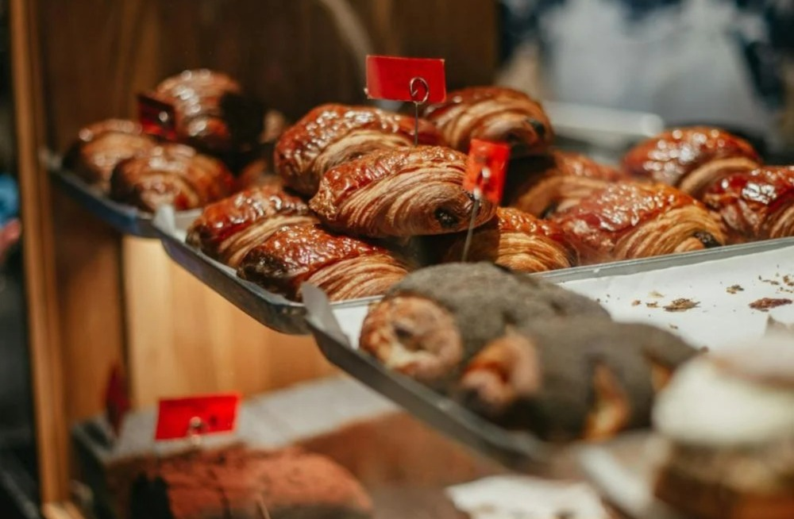

Avenida Paulista - SP
Avenida Paulista - SP
No coração de São Paulo, nossa padaria oferece o clima único da Avenida Paulista, um dos maiores símbolos da cidade, com um ambiente acolhedor para os paulistanos e turistas.

Vila Madalena - SP
No bairro mais descolado e artístico de São Paulo, nossa unidade oferece um espaço perfeito para quem quer realizar e saborear nossos pães e doces artesanais.
Centro Histórico - SP
No tradicional e movimentado Centro Histórico de São Paulo, nossa padaria oferece o melhor da panificação no centro pulsante da cidade, onde história e modernidade se encontram.